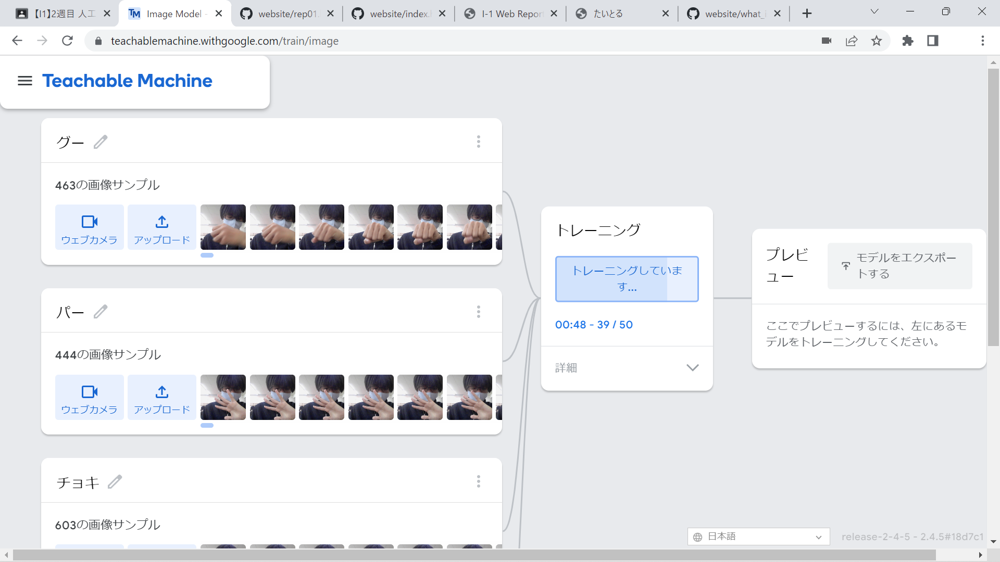
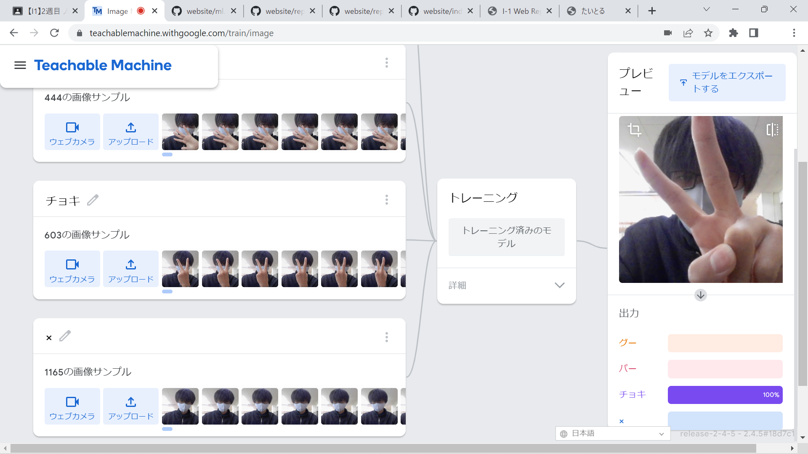

第2週目
2-1 １週目のレポートをHTMLで作る
１週目のレポート
1.内容
Githubを使ってレポート提出用の自分のホームページにレポートを書いた。
2.感想
最初はひとつひとつの動作で詰まっていたけれど、たくさんやっていくうちに作業がスムーズになっていったので、
もっと極めればスムーズにできるのかなと思った。
2-2 機械学習体験


1.内容
PCに内蔵されているウェブカメラを使って、グー、チョキ、パーやその他の動きや形を認識させ、判別させた。
2.感想
判別の精度はそれなりには高かったけれど、向きや角度によって間違いが頻繁に表れていたので
まだまだ改善点は多いのかなと思った。
2-3 VR（バーチャルリアリティー：Virtual Reality）の体験
1.内容
VRを使って会議室に入った。ホワイトボードなどの機能を利用した。
2.感想
確かに、便利ではあったけれど操作が少し難しいと感じた。
自分の手の動かす速さととコントローラーの感度が全然違ったので操作しにくいと感じた。
定められた数値から人が感度に合わせるのではなく、感度を一人一人にぴったりのものにする機能が欲しいと思った。